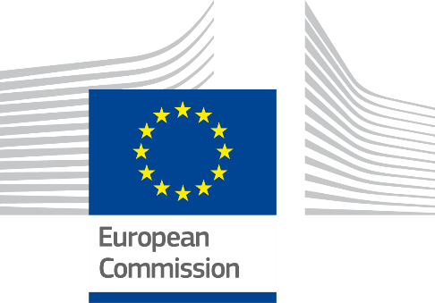

Digital Public Administration factsheet 2023
Malta

1 Interoperability State-of-Play 4
2 Digital Public Administration Political Communications 8
3 Digital Public Administration Legislation 18
4 Digital Public Administration Infrastructure 26
5 Digital Public Administration Governance 38
6 Cross Border Digital Public Administration Services for Citizens and Businesses 42

1
Interoperability State of Play
1
Interoperability State-of-Play
In 2017, the European Commission published the European Interoperability Framework (EIF) to give specific guidance on how to set up interoperable digital public services through a set of 47 recommendations divided in three pillars. The EIF Monitoring Mechanism (MM) was built on these pillars to evaluate the level of implementation of the framework within the Member States. Whereas during the previous, the MM relied upon three scoreboards, the 2022 edition includes an additional scoreboard on cross-border interoperability, assessing the level of implementation of 35 Recommendations. The mechanism is based on a set of 91 Key Performance Indicators (KPIs) clustered within the four scoreboards (Principles, Layers, Conceptual model and Cross-border interoperability), outlined below.
Source: European Interoperability Framework Monitoring Mechanism 2022
Each scoreboard breaks down the results into thematic areas (i.e. principles). The thematic areas are evaluated on a scale from one to four, where one means a lower level of implementation and four means a higher level of implementation. The graphs below show the result of the EIF MM data collection exercise for Malta in 2022, comparing it with the EU average as well as the performance of the country in 2021.
Source: European Interoperability Framework Monitoring Mechanism 2022
The Maltese results in Scoreboard 1 stand for an overall good implementation of the EIF Principles. Compared to 2021, Malta performed better under Principle 7 (Inclusion and Accessibility), showing alignment with the European average. Potential areas of improvement relate to the implementation of Principles 12 (Assessment of Effectiveness and Efficiency) and 1 (Subsidiarity and Proportionality), for which the score of 3 could be further improved. In addition, Malta could increase its score on Principle 3 (Openness) and Principle 4 (Reusability), focusing on the reuse and share of information and data when implementing European public services. Regarding the latter two principles, Malta shows a decrease of the performance compared to the previous year. Such reduction will need to be further monitored with the results of 2023.
Source: European Interoperability Framework Monitoring Mechanism 2022
Malta’s scores in Scoreboard 2 illustrate an overall good performance of the country with scores of 3 and 4 in all the interoperability layers. Areas of improvement to strengthen the country’s implementation of the recommendations under Scoreboard 2 concern interoperability governance, integrated public service governance and legal interoperability. More specifically, with regard to the interoperability governance, Malta has a middle performance in the instances of participation in standardisation works (Recommendation 24). Finally, to match the European average on legal interoperability, Malta could pay more attention to ensuring that legislation is screened by means of ‘interoperability checks’ in order to identify any barriers to interoperability (Recommendation 27).
Source: European Interoperability Framework Monitoring Mechanism 2022
Malta’s scores assessing the Conceptual Model in Scoreboard 3 show a good performance in the implementation of recommendations associated with internal information sources and services, base registries and open data. However, some improvements can be made in implementing recommendations related to the conceptual model itself, as well as with regards to external information sources and services. Precisely, the lack of a common scheme for interconnecting loosely coupled service components and putting in place the necessary infrastructure for establishing and maintaining public services (Conceptual Model - Recommendation 35) hinders the overall Maltese score on the conceptual model. Additionally, the use of external information sources and services while developing public services could improve the score on the external information sources and services category (External information sources and services – Recommendation 45).
Source: European Interoperability Framework Monitoring Mechanism 2022
The results of Malta on Cross-Border Interoperability in Scoreboard 4 show a good performance of the country. Particularly, Malta has the maximum score of four for 13 indicators out of 19. However, Malta has still margin for improvement in relation to six indicators where the country obtains a lower performance, such as Principle 7 (Inclusion and Accessibility). For instance, efforts could focus on increasing the compliance with the European accessibility standards of the Directive on the accessibility of the websites and mobile applications of public-sector bodies (Recommendation 14).
Additional information on Malta’s results on the EIF Monitoring Mechanism is available online through interactive dashboards.
Curious about the state-of-play on digital public administrations in this country? Please find here some relevant indicators and resources on this topic: |

2
Digital Public Administration Political Communications
 National Digital Strategy
National Digital Strategy
The Malta Digitali 2022–2027 (National Digital Strategy), launched in November 2022, sets out the Maltese government’s vision on how it intends to maintain its momentum as a global digital leader and a champion of emerging technologies. The strategy lays the foundations for Malta’s transition towards a more digitalised society and economy leading to better public services, more productive businesses and citizens that are able to harness the immense opportunities brought about by digitalisation. The National Digital Strategy thus sets out how the government shall act not only in its traditional role as promoter and regulator, but also as the enabler, incubator and accelerator for change towards digitalisation. In order to achieve this vision, several goals have been identified. Malta is committed to work towards them while the strategy is being implemented. These goals are supported by six guiding principles that encompass how digitalisation should be applied and focused. Consequently, one of the strategy’s focal points addresses the diverse needs, requirements, and expectations of various cohorts of Malta’s society and economy. In particular, the way digitalisation can make a real difference in daily life, the digital opportunities that arise, and the related challenges that will need to be addressed from a three-pillar perspective - society, business and government will be analysed. Another focal point of the strategy looks at how digitalisation can shape and strengthen Malta’s economy. More specifically, this is being addressed through a strategic course of action that investigates growth through innovation and further digital strategic focus on various sectors of social and economic importance. Government plays a leading role by further investing in emerging technologies, such as by setting up a digital innovation hub (DIH), providing access to government open datasets, expanding funding for research and innovation (R&I), and cultivating an ecosystem that is conducive to and supportive of digitalisation. Undoubtedly, attention must also be paid to a number of key enablers, among which there are those related to regulation and legislation, digital infrastructure and funding, as well as cybersecurity, data and eSkills (Digital Skills).
Berlin Declaration on Digital Society and Value-Based Digital Government
In December 2020, the Maltese government signed the Berlin Declaration on Digital Society and Value-Based Digital Government, thus re-affirming its commitment – together with other EU Member States – to foster digital transformation in order to allow citizens and businesses to harness the benefits and opportunities offered by modern digital technologies. The Declaration aims to contribute to a value-based digital transformation by addressing and strengthening digital participation and digital inclusion in European societies.
New Strategy for the Public Service – Achieving a Service of Excellence
In December 2021, the public service launched a new strategy for the next five years, called Achieving a Service of Excellence. A steering committee headed by the Principal Permanent Secretary was set up and four working groups reporting to this committee were formed: three groups were exclusively focused on the three main pillars this strategy is based on - people, technology and services, while the fourth group was focused on drafting the final document. The vision outlines what the 45 main initiatives and eleven strategic objectives captured in the plan aim to achieve – a seamless public service that is accountable, sustainable and that continually strives to provide a service of excellence. A study on public service renewal commissioned in 2020 highlighted the need to focus the efforts on improving the quality of services, the accountability towards clients, as well as the sustainability as a large organisation. Public service values are intended to inspire respect, promote ethical conduct, acknowledge the highest integrity standards, safeguard clients’ rights and promote a culture that embraces honesty, correctness and professionalism. In order to support these values, a set of guiding principles have been identified, i.e. effective leadership, holistic people management and employee empowerment, ongoing measurement, continuous improvement, decision making and policy making and client centricity. A strategic plan with tangible outcomes and milestones was compiled and for each initiative and strategic objective a champion has been identified.
Centralised Digital Enabling Services Policy
The policy published in December 2019 aims to encourage the use of centralised digital services, which will enable the use of digital services within the public administration and guide the adoption of alternative services in order to ensure data security. The policy recommends that all government bodies and agencies should, unless they have specific needs, give priority to the following centralised digital-enabling services provided by the government:
 Public Administration Data Strategy
Public Administration Data Strategy
The Public Administration Data Strategy 2023–2027 (to be published in Q2 2023) aims to build upon the exponential growth of data and the various technologies used for its collection, processing, storage, preservation and transmission, whilst also addressing the challenges met on a national scale over the past years. It aims to engender the general principles of fairness and transparency so that individuals, and public and private sector organisations can process data to the maximum extent possible, as permitted by the law, for the benefit of natural or legal persons owning that data. It is designed to encourage and empower the various data owners to share and re-use data included in the relevant and applicable legislation and to publish as open data all the data which are not sensitive or personal in nature.
National ICT Interoperability Framework
Malta acknowledges the importance of interoperability and is working decisively towards making its public services interoperable. The Malta Information Technology Agency (MITA) is in the process of revising the current National ICT Interoperability Framework (NIF), to ensure its alignment with the European Interoperability Framework (EIF). Its primary goal of encompassing and substantiating the most recent EIF, providing an action plan tailored to the national context. The NIF therefore uses the EIF interoperability principles and recommendations as a basis to direct national efforts towards a connected government and public administrations through legal, organisational, semantic, and technical interoperability. The end goal is to modernise the public sector using the latest technology, whilst maximising the benefits and innovation and reducing the burdens of the immense data of the domain.
Enterprise Architecture Policy
Amongst the Government of Malta ICT (GMICT) policies, the Enterprise Architecture Policy for Interoperability and Reuse regulates architecture building blocks and complements the NIF. GMICT policies have recently undergone a rationalisation exercise to ensure their currency.
No political communication has been adopted in this field to date.
National Identity Management System
The National Identity Management System (NIDMS) provides the functionality necessary to consolidate eID Account data and seamlessly associate them with the eID, eRP and ePassport lifecycle. The solution provides access management tools to determine the access level to be granted to administrators/operators.
The NIDMS system consists of a number of distinct components operating together to deliver eID cards, eResidence cards, and ePassports to applicants. Electronic cards contain qualified electronic signatures compliant to EU Regulation No. 910/2014 (eIDAS Regulation).
 Malta Cybersecurity Strategy
Malta Cybersecurity Strategy
In November 2022, Malta launched a new National Cyber Security Strategy. The strategy covers the years 2023 to 2026, and aims to:
 Foster cooperation in cybersecurity on a national, European and international scale.
Foster cooperation in cybersecurity on a national, European and international scale.Establishment of the National Cyber Security Co-ordination Centre
In October 2022, MITA officially launched the National Cybersecurity Coordination centre (NCC) in accordance with Regulation (EU) 2021/87. The NCC organized a National Cybersecurity Conference and started building the Maltese cybersecurity community through the organization of bi-monthly cyber breakfast events, where the cybersecurity community have a chance to discuss the most current cybersecurity issues. The NCC also embarked on a cybersecurity capacity building initiative, organizing a nation-wide cybersecurity skilling programme including courses to train interested IT personnel to launch their careers in cybersecurity and to upskill the existent workforce. This is amplified by awareness-raising initiatives on current cybersecurity challenges and issues. The NCC also manages EU funds directed towards cybersecurity projects and research projects.
Security Governance and Operations
With regards to cybersecurity within the public sector, the MITA drew up, published and communicated an Information Security Policy. This policy is based on the ISO27001 Information Security International Standard and is applicable to everyone within the public sector. As part of its Security Governance framework, the MITA started scanning all government websites that utilised its infrastructure for the identification of vulnerabilities and subsequent rectification by the respective owners. A Client Protection Framework was developed to provide business owners with visibility on the security position in the areas for which they are responsible. This was an innovative project which re-designed the way the MITA sought to provide assurance to its clients that the infrastructure on which government data resided was adequately safeguarded from the ever-increasing threats defining today’s cyberspace. The MITA heavily invested in cutting-edge technology to provide its clients with the ability to continuously scan for vulnerabilities and obtain real-time visibility on the operational health and security profile of environments hosted on its new Hybrid Cloud Enabling Infrastructure. Information security included three main dimensions: confidentiality, availability and integrity, and involved the application and management of appropriate security measures for a wide range of threats, with the aim of ensuring sustained business success and continuity, and minimising impacts of information security incidents (reference ISO/IEC 27000). Additionally, The MITA invested in tools to aid in the detection and prevention of cybersecurity incidents, including adequate training of its employees throughout the organisation, and collaboration with other governmental departments to ensure a centralised and cohesive approach in this domain. Messages to the public pertaining to cybersecurity are channelled through Malta’s cybersecurity page. Advisories to the public are also published by CSIRTMalta, through its page.
Launch of the National Cybersecurity Awareness and Education Campaign
The National Cyber Security Awareness and Education Campaign was successfully launched and it is currently in the implementation phase. A number of awareness-raising campaigns and educational activities are being organised to ensure that users are aware of cyber security risks.
Implementation of the NIS Directive
The Critical Information Infrastructure Protection Unit (CIIP Unit) which forms part of the Malta Critical Infrastructure Protection Directorate (MaltaCIP Directorate) in the Ministry for Home Affairs, Security, Reforms and Equality (MHSR), is the national competent authority (NCA) overseeing the implementation of L.N. 216 of 2018, being the transposition of EU Directive 1148 of 2016, better known as the NIS Directive. In its capacity as the NCA for Malta, the CIIP Unit regulates CIIs, OESs and DSPs as well as the implementation of national measures to address the requirements emerging from the above-mentioned law.
This legislation aims to improve the national security capability of the country; enhances cross-border collaboration between EU NIS national competent authorities; and upgrades national supervision of critical sectors. This is achieved through both ex-ante and ex-post supervisory measures within the law.
CSIRTMalta Constituent Programme
CSIRTMalta, forming part of the MaltaCIP Directorate, is the national Computer Security Incidence Response Team (national CSIRT) with responsibility for the public and private sectors. The CSIRTMalta Constituent Programme was established for the purpose of collaborating and sharing of malware information and intelligence. CSIRTMalta is also the national entity responsible for the coordination of incident response for cyber-related incidents. In terms of legislation CIs, CIIs, OESs and DSPs are obliged to establish their own CSIRT services or receive them to help protect their infrastructures and their clients from cyber-related incidents. CSIRTMalta promotes the development of sector-specific CSIRTSs in Malta and created what is better known as the Maltese CSIRT Community. CSIRTMalta operates a state-of-the-art national security monitoring centre at its main offices in Valletta, where it provides a number of ex-ante and ex-post services related to cyber incident response which includes the reporting of vulnerabilities. CSIRTMalta also acts as a secure information exchange channel for cyber incident response.
Public Sector Cybersecurity Training
In 2019, the Malta Information Technology Agency organised a cybersecurity training course for the public sector. The primary goal of these sessions was to inform the trainees about the latest cybersecurity threats, such as social engineering, and to give an explanation of the government GMICT Policies that are based on ISO 27001 security standards.
In 2022, the MaltaCIP Directorate provided a number of cybersecurity training programmes to the Malta Police Force.
Launch of the B-Secure Scheme
The B-Secure scheme was successfully implemented and the project has been closed.
Registry of Base Registers
The Registry of Base Registers is a comprehensive list of legally-based official lists and registers. This includes all the national registers, including the main Base Registers for Persons, Locations (Addresses) and Organisations, a set of administrative registers which reflect the public organisations and the organisational structures of the government of Malta, as well as the list of public services. These registers will form the basis to the Once-Only Principle Initiative within the Public Service Strategy, which seeks to ensure that public-facing services are simplified, consolidated, and integrated with back-end systems.
The quality and governance aspects of the master data is first and foremost regulated through a new set of specific legal instruments and new subsidiary legislation under Cap. 546 of the Laws of Malta (PSI Directive transposition) with the intention to give legal basis to data sharing and re-use both within and beyond public administration.
eProcurement System
Malta has implemented its eProcurement System since 2011 and has now completed the transition from traditional to digital procurement. Since 2016, through the publication and dissemination of a Contracts Circular across the Public Administration, mainstream use of Digital Procurement became highly encouraged. However, the new Public Procurement, Utilities Procurement and Concessions Regulations passed in 2016 obliged contracting authorities to publish all procurement calls above EUR 5, 000 (excluding VAT) on Government’s e-procurement platform (better known as the Electronic public Procurement System: ePPS).
During 2018, the implementation of a Contracts Register was launched with the aim of increasing transparency. A second initiative was to simplify processes and encourage wider cross-border participation, notably the implementation of the European Single Procurement Document, and its integration with eCERTIS and the National Registers in the eProcurement System.
 Domain-specific Political Communications
Domain-specific Political CommunicationsNational eSkills Strategy
In 2022, the eSkills Malta Foundation launched the new National eSkills Strategy for the period 2023-2025. The objective of the strategy continued on the path set by the previous strategy, i.e. developing a coordinated approach to improve the digital skills, knowledge and attitudes of actors within the education, industry, society and ICT sectors. The strategy puts forward a three-dimensional approach to tackle the development of basic and advanced digital skills in the four strategic pillars of education, society, the workforce, and the ICT professionals. The dimensions (i.e. goals, outcomes and governance enablers) are detailed in the National eSkills Strategy.
Development of Digital Skills in Compulsory Schooling
The Directorate for Digital Literacy and Transversal Skills (DDLTS), within the Ministry for Education, identifies gaps in the digital skills of educators and supports them accordingly. The DDLTS coordinates support for educators to make use of various technologies that are available in schools and include them in their lessons in order to engage the students and facilitate learning. The DDLTS organises many initiatives in education to promote digital literacy, coding and computational thinking, and the implementation of DigComp:
Digital Education at Further and Higher Education Level
The Malta College of Arts, Science and Technology (MCAST) and the University of Malta teach digital and media literacy classes. At the University of Malta, the AI department gives lectures to more than 5,000 students in secondary schools; a new syllabus has been launched whereby 5,000+ students will be trained during the summer months on AI concepts. Similarly, the MCAST has launched its AI strategy that includes nine initiatives with the aim of: (i) preparing better MCAST students for an industry that includes AI; (ii) assist and manage MCAST students, with the support of AI, throughout their learning experience, and (iii) support lecturers in understanding and applying AI in teaching, research and industry solutions. Moreover at MCAST, all the I.T. keyskills units are currently undergoing a comprehensive review. Any changes will result in a modification of secondary school curricula and in further support of vocational programmes at college.
The Malta Further and Higher Education Authority (MFHEA) has also launched an IT Sector Skills Unit to create national occupational standards for the digital sector. The Institute for Education, on the other hand, is currently offering awards in the digital skills area. Anyone who meets the eligibility requirements can attend these courses, which aim to upskill or help educators develop new competences. Finally, the Commonwealth Centre for Connected Learning (3CL) operates as a knowledge hub for a global network of groups, agencies, institutions, educators and activists interested in the rapid deployment of programmes for connected learning in the Commonwealth and the EU. The Centre is an international foundation set up by the government of Malta in collaboration with the Commonwealth of Learning, and is conducting research on the impact of blockchain, AI, augmented reality and big data on digital education.
Malta Information Technology Agency Strategy (2021–2023)
The Malta Information Technology Agency (MITA) Strategy covers the period 2021 to 2023 and as a vision it is ‘Committed to a Digital Future’. The MITA does this by assisting the government in providing direction and implementing solutions in the digital sphere.
The strategy is based on seven domains. At the core is the provisioning of data centre facilities which host the government’s critical information systems and associated data, and the network infrastructure which provides a backbone for whole government. The second domain relates to information systems where the MITA designs, implements, maintains, and modernises both horizontal digital platforms and solutions, as well as vertical information systems used by the public administration. The third domain focuses on utilising innovative technologies and making the best use of data sharing and linking to facilitate projects such as Once-Only. A key domain centres around information security, including the operations of a Security Operations Centre and the setting up of a National Coordination Centre. This domain also comprises Cyber Security activities and awareness programmes targeting different audiences.
The MITA always adopts a strategic approach, therefore this is another domain. The Agency assists the government both at a national and public administration level in drafting and setting up digital policies, strategies, and architectural roadmaps. The MITA represents Malta on various EU and national committees. A sixth domain relates to the external environment. The MITA provides various consultancy and project management services and a suite of digital solutions, which are based on its knowledge, competences, platforms, and tools. The Agency establishes strong relationships with various stakeholders, internal and external to the government. Finally, the strategy presents an internal domain; just like any other organisation, the MITA has several internal supporting functions and processes that are integral to its work. Supporting the seven domains is the most important asset that the organisation has, its employees. The MITA has excellent resources in different areas and takes measures to motivate, develop and recognise them and to provide an environment where they can deliver. The MITA Strategy is being reviewed and strategic objectives analysed so that it sets its pace for the upcoming opportunities and challenges to keep assisting the government in the further digitalisation of public services.
Digital Justice Strategy (2022–2027)
On 3 December 2021, the Maltese Ministry for Justice launched its new Digital Justice Strategy for the years 2022-2027. The strategy seeks to adopt a strategic framework to make further use of the available technologies, respect the rule of law and the substantive and procedural rights of all citizens. This strategy envisages that a more unified and coordinated approach amongst all justice entities will be achieved by the establishment of a set of guiding fundamental principles, which all digital initiatives within the justice sector shall adhere to. The strategy rests on 3 key strategy enablers, namely people, ICTs and processes for the alignment of strategic priorities in order to reach the strategic vision of ‘Improving the quality and the efficiency of justice through innovation, digitalisation and new technology whilst fully respecting the rule of law and guaranteeing the substantial and procedural rights of all citizens.’ The strategic goals based on Fundamental Justice Principles and strategic principles are: Digital by default; Access to justice; Analytical capabilities; and Building digital skills and competencies.
The strategy will be implemented in the period of 2022–2027 and will make use of technological building blocks available nationally and at EU level, amongst others. The action plans for the first 2 years have been designed and are being implemented. Considering the evolving nature of ICTs, action plans will be revised to take stock of the digital landscape at the time. Governance structures and the project management approach have also been setup to oversee the strategy implementation process.
Digital Tourism Roadmap
The aim of the Digital Strategic Roadmap is to set the course for meeting the goals of one of the 13 strategic challenges of the Malta Tourism Strategy 2021–2030: specifically, the one titled ‘Fostering cross collaboration across various digital tourism initiatives through the consolidation and better use of data’ (page 42). The goals are:
Malta.ai Strategy
The ‘Strategy and Vision for Artificial Intelligence in Malta 2030’ is the national AI strategy which was developed by the Maltese government to focus on investment and resources aimed to maximise the benefits which AI can bring to Malta and, more in general, to the global economy. The national AI strategy aims to map the path for Malta to gain a strategic competitive advantage in the global economy as a leader in the AI field through a holistic approach. It also aims to give due focus to the needs of various groups of stakeholders as the country looks forward to achieving its vision. This strategy is built on three strategic pillars which focus on boosting investment, innovation, and adoption. Moreover, the strategy contains three strategic enablers that cut across the three aforementioned areas. Hence, the strategy’s wide-reaching nature ensures that it is inclusive and does not leave any segment of society unduly burdened or left behind. The Malta Digital Innovation Authority (MDIA) is entrusted with overseeing the implementation of the strategy. As part of the strategy, the document titled ‘the Ultimate artificial AI Launchpad’ sets a vision for Malta to become the “Ultimate AI Launchpad” by 2030. It contains a total of 72 different AI action points which include six AI-related pilot projects from six key public sectors domains, i.e., tourism, education, customer care, water and energy, health and transport. Such projects facilitate the path for more intake from the private sector. Apart from these six pilot projects, the national AI strategy is funding other initiatives encompassing applied research projects, scholarship funds and educational and awareness campaigns.
Increasing the Amount of Postgraduates in AI
The Pathfinder MDIA Digital Scholarship is intended to support postgraduate education – i.e., Master’s (MQF Level 7) and PhD Level (MQF Level 8) – in the field of Artificial Intelligence and Information Security, and to ensure that the Maltese labour market is supplied with the right individuals and to guarantee that it is in a better position to compete at an international level. The scheme is aimed to support those pursuing this path to succeed both at the level of education attainment as well as contributing effectively towards the economy.
Sustaining Applied Research in AI
The MDIA has launched an AI Applied Research Grant with the objective to support capacity-building efforts related to Artificial Intelligence research in Malta. Specifically, this Grant aims to encourage:
Scholarships on Blockchain and DLTs
On 28 August 2018, a scholarship, forming part of an agreement between the University of Malta and the MITA, was launched in the presence of the Parliamentary Secretary for Financial Services, Digital Economy and Innovation. The scholarship covers a EUR 300,000 fund launched by the government over a three-year period, and which shall enable interested students to pursue their studies in blockchain and distributed ledger technologies (DLTs). This initiative is seen as a pillar in education to build upon the amount of skilled workforce that will be required to sustain the large number of DLT companies which have shown their interest in investing in Malta and which are willing to base their companies in Malta, following the country’s legislative developments on DLT. During the first two years of the scheme, 19 students have been granted the scholarship. Students granted the scholarship span multiple disciplines including law, business and ICT.
Strategic partnership with Microsoft
The government of Malta and Microsoft Corporation signed a five-year strategic partnership agreement consisting of a number of key initiatives. One of the main initiatives within the strategic agreement is setting up a Microsoft Innovation Centre in Malta focused on Cloud Computing with a seed investment of over 3 million EUR by Microsoft and its partners. A collaboration agreement was also signed between MITA, MCAST, and Hewlett-Packard (HP) for the establishment of an HP Education Centre at MCAST. The main aim of such agreements between the government, education entities and ICT multinational companies is to stimulate more students to take up a career in ICT.
Investments in IoT applications
The Malta.AI Strategy provides direction to expand Malta’s data economy through 5G and IoT. Action 71 of the same strategy states that the government is keen to ensure that investments undertaken in sensor and device infrastructure which can enable IoT applications are fully leveraged and that a number of measures are planned, particularly to:
Compute Capacity
The Malta.AI Strategy also provides direction on the use of cost-effective access to computing capacity and includes a number of actions in this regard (actions 67 to 70).
The MDIA has secured funding under the Digital Europe Programme (DEP) to establish a European Digital Innovation Hub. One of the primary objectives of this initiative is to offer access to a high-performance computer to start-ups and small and medium-sized enterprises (SMEs). The EDIH is scheduled to become operational within the next three years and is poised to significantly enhance technology access and adoption for these businesses.
No political communication has been adopted in this field to date.
No political communication has been adopted in this field to date.

3
Digital Public Administration Legislation
Reuse of Public Sector Information Act
Legal Notice 429 was published in 2020, together with the Organisational Structures for Data Sharing and Reuse Regulations, under the Reuse of Public Sector Information Act (Cap. 546). This law amended Cap. 546 to establish the Office of the Information and Data Protection Commissioner as the regulatory authority in Malta, and the Malta Information Technology Agency (MITA) as the implementing entity, serving as the main co-ordinator and first line of call for any obligations arising out of the Act. The MITA was also entrusted to publish a standard and format for management of communications between the public administration and natural persons and/or organisations and establish the national data portal through which data discovery and data consumption services shall be provided, as may be applicable and authorised by the data owner.
Furthermore, Legal Notice 430 of 2020 brought into force the Business Register and Information Sharing Regulations (Subsidiary Legislation 546.02) These regulations established a Business Register and Registrar for Business responsible for the administration of the Business Register, as well as a Business Portal to facilitate sharing of business information between public sector bodies.
Electronic Filing of Official Documentation
The electronic filing of official documentation is necessary for the purposes of processing by the public administration and judicial authorities.
From a judicial process point of view, the possibility to submit judicial acts by electronic means commenced in 2013 in the Small Claims Tribunal. This was followed, in 2015, by acts filed with the Administrative Review Tribunal and, in 2016, by judicial letters filed with the Courts of Malta and Gozo. Since 2015, summons issued by the Commissioners for Justice could be served through electronic mail. In August 2017, the necessary regulations were issued for the electronic filing of applications in the Court of Magistrates:
The electronic filing of official documentation necessary for processing by the public administration has progressed steadily. An early example of filing by electronic means was Article 239 of the Civil Code which followed on the electronic signature reforms introduced through the Electronic Commerce Act. Sub-article 2 was included in the Code in 2012 and provided that the copy of an Act registered in accordance with sub-article 1, and transmitted to the Director by any electronic means, or any true copy thereof, shall be deemed a true and authentic copy for all purposes of law provided this copy was signed by the Director receiving it. In 2016, the electronic submission of income tax related documentation was consolidated and updated through Legal Notice 284 of 2016 (Electronic Communications Rules 2016).
Freedom of Information Act
The Freedom of Information Act (FOIA) (Cap. 496) in Malta came fully into force in September 2012. This legislation provides for access to documents held by the government, including the public service and the public sector (entities, authorities and agencies).
Through its provisions, applicants may submit requests for documents and all public authorities are obliged to assist applicants in making their requests, processing and replying to requests within specific timeframes. A document in the context of this law is defined as any article on which information is recorded in whatever form, therefore this may refer to various types of material, including manual and electronic files, audio visual material, as well as scale models. The FOIA defines processing as the search, retrieval, examination and disclosure of a document.
The submission system includes a notification of submission and a reply within 20 working days. Either the document will be disclosed, partially disclosed or not disclosed. In the latter case the public authority has to provide the reason for refusing access. Such reasons are only possible through the restrictions listed in the FOIA. Restrictions are mainly tied to matters relating to law enforcement, public safety, international relations, protection of personal data, and commercial interests. All requests submitted are free of charge, but public authorities may request payment that covers the processing aspect. Applicants that are dissatisfied with the outcome of their request may submit a complaint to the public authority, which can overturn the original decision.
Further to this, the applicant can also lodge an appeal with the Information and Data Protection Commissioner. Following the decision by the Commissioner, the applicant may seek further redress through the Information and Data Protection Tribunal. The possibility of appeal is also possible for the public authority in this case. Decisions by the Tribunal may be further moved on to the Court of Appeals by any of the parties.
Re-use of Public Sector Information
Cap. 546 of the Laws of Malta, which transposed into Maltese law the general principles governing the reuse of public sector information (Directive 2013/37/EU of the European Parliament and of the Council of 26 June 2013), was amended through Act XI of 2020 which widened the scope of the legislation to apply to the sharing of all data for public administration rather than solely open data. Cap. 546 of the Laws of Malta was then further amended to transpose the provisions of Directive 2019/1024 on Open Data and the Re-Use of Public Sector Information. Although this Directive replaces the PSI Directive, it is also being referred to as a ‘recast directive’, wherein principles from the PSI Directive are retained and expanded on. The provisions of the recast directive were transposed into Maltese legislation on 2 July 2021 through an Amending Act to Cap. 546 of the Laws of Malta.
eID Regulation
Malta was one of the first Member States to legislate in eCommerce by transposing the eSignatures Directive into national law in 2001. The eCommerce Act was subsequently updated over the years to maintain its applicability to the digital market context, and most importantly was overhauled in 2016 to align with Regulation No. 910/2014 on electronic identification and trust services for electronic transactions in the internal market (the EIDAS Regulation). Today the national legislation on eID and trust services is in line with the eIDAS Regulation and permits Malta to benefit from cross-border authentication and digital signing in eGovernment services.
NIS I Directive
The Directive (EU) 2016/1148 concerning measures for a high common level of security of network and information systems across the Union (also called the NIS I Directive) was transposed into Maltese legislation through Legal Notice 216 of 2018 entitled ‘Measures for High Common Level of Security of Network and Information Systems Order, 2018’. This legislation aims to improve the national security capability of the country, enhances cross-border collaboration between EU NIS national competent authorities and upgrades national supervision of critical sectors. This is achieved through both ex-ante and ex-post supervisory measures within the Legal Notice.
The CIIP Unit, forming part of the MaltaCIP Directorate, is the national competent authority (NCA) overseeing the implementation of this order, which regulates critical information infrastructures, operators of essential services and digital service providers. It also oversees the implementation of national measures to address the requirements of the Legal Notice.
 Directive (EU) 2022/2555 on Measures for a High Common Level of Cybersecurity across the Union, amending Regulation (EU) No 910/2014 and Directive (EU) 2018/1972, and repealing Directive (EU) 2016/1148 (NIS 2 Directive)
Directive (EU) 2022/2555 on Measures for a High Common Level of Cybersecurity across the Union, amending Regulation (EU) No 910/2014 and Directive (EU) 2018/1972, and repealing Directive (EU) 2016/1148 (NIS 2 Directive)
The NIS 2 Directive, which entered into force on 16 January 2023, is to be transposed into Maltese law by 17 October 2024. The MaltaCIP Directorate will oversee the transposition by means of a legal notice, in consultation with relevant ministries and entities. The transposition will repeal Legal Notice 216 of 2018 and 335 of 2018.
The CIIP Unit, i.e. the single point of contact, and CSIRTMalta, i.e. the national CSIRT, will continue to be designated as such and will supervise the implementation of the required measures and compliance of the obligations under the NIS 2 Directive. In particular, they will oversee the implementation of Malta’s second National Cybersecurity Strategy 2023-2026, establish a national vulnerability disclosure mechanism, and conduct a national cyber risk assessment and compliance monitoring of essential and important entities in Malta.
In accordance with the legal notice, the compliance with the operator security plans of those entities that, before 16 January 2023, have been identified as operators of essential services, will continue to be monitored by the CIIP Unit. Furthermore, the CIIP Unit will continue to conduct simulation exercises testing the technical maturity of the entities in the scope of the directive. CSIRTMalta will continue to retain a registry of CSIRTs in Malta and implement a number of actions, such as workshops and meetings, with the local CSIRT community.
 Directive (EU) 2022/2557 on the Resilience of Critical Entities and repealing Council Directive 2008/114/EC (CER Directive)
Directive (EU) 2022/2557 on the Resilience of Critical Entities and repealing Council Directive 2008/114/EC (CER Directive)
The CER Directive aims at enhancing the physical resilience of critical entities, which will be designated as essential entities under the NIS 2 Directive. The CER Directive has also entered into force on 16 January 2023 and is to be transposed into Maltese law by 17 October 2024. The transposition will repeal Legal Notice 434 of 2011 entitled ‘Critical Infrastructures and European Critical Infrastructures (Identification, Designation and Protection) Order’.
Under the current legal notice, the Critical Infrastructure Protection Unit (CIP Unit) within the MaltaCIP Directorate identifies, designates and oversees critical infrastructure, assets and facilities, among other tasks. The CIP Unit also acts as the European critical infrastructure protection contact point in Malta and coordinates the Maltese position on critical infrastructure protection issues at the European level. The MaltaCIP Directorate will also oversee the transposition of the CER Directive by means of a legal notice in consultation with relevant ministries and entities.
The CIP Unit will continue to be designated as the competent authority and single point of contact that supervises the implementation of the required measures and compliance of the obligations under the CER Directive, notably establishing a strategy on the resilience of critical entities, conducting a national risk assessment and compliance monitoring of critical entities in Malta.
Data Protection Act
The GDPR became applicable EU-wide on 26 May 2018, and concurrently the new Data Protection Act (Cap. 586) was passed through Parliament.
The Data Protection Act passed through Parliament on 14 December 2001 and came fully into force in July 2003. It was introduced in order to render Maltese law compatible with the EU Data Protection Directive (95/46/EC), even though Malta was not yet an EU Member State. It outlined principles of good information/data handling to guarantee the protection of personal information. Data controllers, such as educational institutions, employers and banks, were obliged to inform individuals of the reasons for collecting information about them. Furthermore, individuals were assured that the data collected would not be used for any other reason than the purpose for which it was collected and were granted rights of access to the personal information held by the data controller. The Act provided grounds for processing personal data but made special provisions for processing sensitive personal data, a sub-set of personal data, in very specific circumstances.
Under the revised Data Protection Act (Cap. 586), subsidiary legislation related to specific processes in varying sectors was also enacted or reviewed for alignment with the GDPR, including the Law Enforcement Directive (EU) 2016/280 and the Processing of Children’s Personal Data in relation to the Offer of Information Society Services Regulations.
Set up of a European Cybersecurity Industrial, Technology and Research Competence Centre and National Coordination Centres
Regulation (EU) 2021/887 establishing the European Cybersecurity Industrial, Technology and Research Competence Centre and the Network of National Coordination Centres came into force on 28 June 2021. The Regulation provides for the set-up of the European Cybersecurity Industrial, Technology and Research Competence Centre (the Competence Centre) and the National Coordination Centres (NCC) within each Member State that shall form part of the Network. It also provides for the establishment of the Cybersecurity Competence Community that will include private entities from the various Member States. Following its adoption, Member States had six months to appoint a public entity to fulfil the role of a National Coordination Centre. MITA has been officially appointed and recognised as Malta’s National Coordination Centre.
Public Registry Act
The Public Registry is regulated by the Public Registry Act (Chapter 56 of the Laws of Malta), as well as the Civil Code (Chapter 16 of the laws of Malta), the Marriage Act (Chapter 255 of the Laws of Malta), the Civil Unions Act (Chapter 530 of the Laws of Malta), the Gender Identity, Gender Expression and Sex Characteristics Act (Chapter 540 of the Laws of Malta) and the Cohabitation Act (Chapter 614 of the Laws of Malta).
Article 238 (1) of the Civil Code (Chapter 16 of the Laws of Malta), obliges the Public Registry Office in Malta and Gozo to keep five register books: one for the registration of acts of birth, one for the registration of acts of marriage, another for the registration of civil unions, another for the registration of acts of death, and the fifth for the registration of the deeds of cohabitation.
Motor Vehicle Registration and Licensing Act
The Vehicle Registry was established by the Motor Vehicles Registration and Licensing Act, Cap. 368 of the Laws of Malta.
Companies Act
The Register of Commercial Partnerships holds basic and beneficial ownership information on every commercial partnership (all types of commercial partnerships, including companies) registered in Malta. The agency in charge of the mentioned register is the Malta Business Registry which has already started the process of developing a system based on the blockchain using a private hyper-ledger. These developments will help ensure that information contained in the register is up to date, accurate and more secure when compared to traditional ledger systems, and that is due to the immutability characteristics of the blockchain system. Having a suitable portal allowing individuals and CSPs to fulfil company law processes electronically ensures also that the latest EU initiatives in relation to company law are incorporated in Maltese company law processes, emanating from the transposition of Directive 2019/1151 of 20 June 2019 as regards the use of digital tools and processes in company law.
Business Register and Information Sharing Regulations
These regulations (Subsidiary Legislation 546.02) provide for the establishment and maintenance of a business profile within which businesses shall store information relative to their activities and share them with public sector bodies as may be necessary from time to time. This business register will contain a profile on each business entity (such as address, genre, NACE Code, VAT number, licenses issued by government agencies etc.). This data will mostly be updated by government entities in real time, however some fields, such as the business address and NACE code, will have to be updated by the business entities themselves. This information will be shared across all government entities on a needs-only basis. Once implemented, rather than businesses being asked for the same information by different entities, most of which would have been issued by another government entity anyway, government entities would have direct access to this information through the register. This will therefore implement the Once-Only principle, as requested by the EU, and reduce bureaucracy for businesses.
Land Registry
The concept of a Land Registry was created with the Land Registration Act and was enacted by Act XXXV of 1981, (Cap. 296 of the Laws of Malta). Furthermore, by virtue of the Land Registration Agency (Establishment) Order, under Legal Notice 4 of 2019, the Land Registration Agency was created. The agency seeks to maintain a reliable and effective land registration system, while providing replies to official searches regarding property. It also issues Certificates of Title related to registered property. In this way Chapter 296 of the Laws of Malta proves to be a vital component in the simplification and standardisation efforts of the public administration.
Public Procurement Regulations
The new set of National Public Procurement Regulations, namely Subsidiary Legislations 601.03 (Original L.N. 352-2016), 601.05 (Original L.N. 351-2016) and 601.09 (Original L.N. 353-2016) were published on 28 October 2016, transposing Directive 2014/24/EU, Directive 2014/25/EU, and Directive 2014/26/EU respectively on public procurement, utilities sector procurement and concession contracts.
Besides the substantive provisions related to public procurement, and the provisions related to purely electronic tools such as Dynamic Purchasing Systems and Electronic Auctions, the regulations, and specifically Subsidiary Legislation 601.03 (LN352 of 2016), provide that calls for quotations and calls for tenders are published using the government eProcurement platform, unless otherwise provided in the relevant regulations and provisions.
Subject to specific conditions, all communication and information exchange, including electronic submission, must be performed via electronic means of communication. The authority responsible for the tendering process shall, by electronic means, offer unrestricted and full direct access free of charge to the procurement documents from the date of publication of the notice or the date on which an invitation to confirm interest is sent.
eInvoicing
The Maltese government promoted the adoption of eInvoicing in its Digital Malta National Strategy 2014–2020. The Treasury Department within the Ministry for Finance and Employment (MFE), is working on implementing a new Corporate Financial Management Solution (CFMS) across the central government, alongside an eInvoicing PEPPOL-compliant platform linking suppliers to the solution. All central government departments went live on the CFMS as from April 2021. Through the help of a contractor, the MFE is also in the process of building an e-invoicing platform for the entities and local councils and regional authorities.
Electronic Invoicing in Public Procurement Regulations
The Electronic Invoicing in Public Procurement Regulations was adopted by Malta in 2018 (LN 404 of 2018).
Legal Notice on Justice
Through a legal notice which came into force in December 2018, the government of Malta continued to implement further reforms related to information in the justice sector. Furthermore, online services are offered by the Department of Justice, through its website.
Filing of Acts by Electronic Means in the Land Arbitration Board Regulations
The Filing of Acts by Electronic Means in the Land Arbitration Board Regulations were implemented in 2018.
Electronic Commerce Act (Chapter 426 of the Laws of Malta)
The Electronic Commerce Act provides for the application of legal requirements to electronic communications and transactions, including electronic contracts. The Act, as originally enacted, transposed into Maltese law EU Directive 1999/93/EC on a community framework for electronic signatures, plus the EU Directive 2000/31/EC on certain legal aspects of information society services, in particular electronic commerce, in the internal market. The competent regulator appointed to enforce the Electronic Commerce Act is the Malta Communications Authority (MCA).
In 2016, this Act was amended and consequently the national provisions implementing Directive 1999/93/EC were deleted or amended, and new provisions introduced empowering the Malta Communications Authority, as the competent regulator, to act as the supervisory body for the purposes of Regulation (EU) No. 910/2014 on electronic identification and trust services for electronic transactions in the internal market and repealing Directive 1999/93/EC (hereafter eIDAS Regulation). The eIDAS Regulation harmonised the norms governing secure electronic interactions between citizens, businesses and public authorities in order to ensure that secure electronic identification and authentication was possible for access to cross-border online services offered by EU Member States. This created a common regime for the regulation of electronic trust services such as electronic signatures, electronic seals, time stamps, electronic delivery services and website authentication.
 AI Act
AI Act
In 2023, Malta is actively engaged in discussions at European Level vis-à-vis the AI Act and the Council of Europe new convention on artificial intelligence.
Distributed Ledger Technology (DLT) and Innovative Technology Regulation
In July 2018, three new DLT Acts were unanimously approved by Parliament to regulate the industry. They included the:
The MDIA Act provided for the establishment of the Authority (MDIA) to certify innovative technologies and introduce a new level of communication between national competent authorities. The MDIA plays a vital role in promoting government policies that favour the development of Malta as a centre of excellence for technological innovation by implementing the best standards in the sector to position Malta at the forefront of technological innovation and create a cutting-edge hub for the digital economy. The MDIA acts as a conduit for the development of new economic sectors, whilst working in tandem to support other national competent authorities such as the MFSA and the MGA, from a technological perspective.
The MDIA is working with MITA to establish an EBSI (European Blockchain Services Infrastructure) Node for Malta. The EBSI is a cross-border blockchain infrastructure where each Member State hosts a node, and where the nodes collaborate using the Proof of Authority algorithm. The EBSI can support various use cases for cross-border systems.
No legislation has been adopted in this field to date.
No legislation has been adopted in this field to date.
No legislation has been adopted in this field to date.
No legislation has been adopted in this field to date.
No legislation has been adopted in this field to date.
No legislation has been adopted in this field to date.

4
Digital Public Administration Infrastructure
Government Portal
The portal is a crucial service for the government of Malta, because it is the electronic interface between the government and the public. In this regard, the government of Malta, through the MITA, has continued to invest heavily in this sector. This was done in order to continue providing the best infrastructure hosting of the government’s public-facing portals. A new portal hosting platform was launched in 2019. The new platform is based on Microsoft SharePoint 2016 and aims to offer an out-of-the-box solution to the government for the address of non-standard branded sites. The government of Malta’s portal is an institutional site providing comprehensive and meaningful information on government ministries, policies and services. Government services and information are structured according to the needs of specific citizen groups/events. An A-to-Z list of government websites can be accessed through the portal. In late 2018, the gov.mt website and the sub site doi.gov.mt, were reorganised and relaunched with a new brand. The government of Malta has its official pubic-facing website at www.gov.mt. In the past this website used to be a gateway for all the necessary information and links about public administration services. This role has now been taken over by servizz.gov’s website.
Servizz Website
Servizz.gov is the agency which acts as the Government’s one-stop-shop for the general public, and www.servizz.gov.mt is now the central website for public administration services. Through this website, the public can look up services categorised by sector. The purpose of establishing such sectors was to simplify the categorisation of services, since now they are linked to a sector which is not bound to change, rather than to a specific ministry which is highly subject to change. The website also offers the possibility for the public to report complaints and excessive bureaucracy, make suggestions and request information. A customer relationship management solution is the infrastructure behind the IT system where all cases are processed against service level agreements and investigated in the most efficient manner. Services that were previously provided on www.mygov.mt now feature on www.servizz.gov.mt.
The former eForm landing pages were also consolidated within the servizz.gov portal in a homogeneous manner. The servizz.gov portal relies on the eForms platform to load the various services that the public requires. The forms on the eForms platform enable information to be collected once at source and are subsequently electronically distributed to the respective government entities. The eForms platform is also integrated with other electronic services, namely the Government Payment Gateway (GPG), electronic identity (eID), SMS notifications and Microsoft Exchange for email notifications.
Data.gov.mt Website
Data.gov.mt is the National Data Portal. It acts as the main entry point to data discovery and consumption for all official registers. It is designed to be the one-stop-shop for all data discovery and meta-data management matters, thus requiring that all meta-data for all registers be made available through the Register of Registers and other Data Governance registers. It has two main sections, namely (i) the Open Data Portal; and (ii) the Internal Data Sharing services.
The National Data Portal is also expected to serve as a link with the European Data Portal for harvesting of local datasets, including those related to open data for publication on a European scale. Any data generated through taxpayer’s contribution and classified as Open Data should be made available for re-use by any person or organisation without any barriers or other obstacles, following the 5-star deployment scheme for open data. Indeed, where possible, the portal displays the contents of official registers which are classified as open data. However, when such data are not readily available, a facility within the portal is needed to submit online formal requests. Such requests for open data would need to follow a legally determined process, having various stages of redress in cases of refusal.
On the other hand, the National Data Portal also caters for the official registers which contain certain sensitive or personal information, and therefore cannot be published as open data. These data are therefore only available to predefined specific roles where the appropriate authentication and authorisation is required in order to gain access. Consequently, the portal also facilitates sharing and re-using such public administration data across authorised entities, as required by their functions.
Government Intranet for the Public Service
The MITA offers a collaborative platform which is also based on Microsoft SharePoint, for document management, collaboration and intranets. This platform is widely used within the government but most notably it is used for the government Intranet for the Public Service – intra.gov.mt. The Intranet for the Public Service is available to all government departments/entities and their employees. Through a collaboration site, intra.gov.mt provides any participating government department/entity the facility to share activities such as document management and workflows that address the internal business requirements of the specific department or entity. The platform holds information in the form of circulars, news, events, directives, newsletters, vacancies, management resources, courses and scholarships and is restricted to public service officials.
Data Protection Portal
Apart from the portal of the Information and Data Protection Commissioner, an intra web presence accessible through the government intranet came into operation in February 2006, and enabled data protection officers to have access to guidelines and templates to ensure that government processes are compliant with the GDPR. As of May 2018, the Data Protection Unit, now within the Ministry for Justice (MFJ) revamped this web presence and took the decision to open up this portal to all officers with access to the intranet, so that all guidelines were available to all and not limited to data protection officers.
Judiciary of Malta Portal
The portal of the Judiciary of Malta provides the public with extensive information resources on the Maltese judicial system, the judiciary, judges and magistrates, as well as the courts they sit in. It offers a latest news section and an insight on the history of the Maltese judiciary and the important judgements that have been pronounced.
eCourts Portal
The eCourts portal is divided into three categories, namely facing the public, citizens and legal practitioners. The advantage to the public is that they have access to all eServices related to the courts of justice from one website that is mobile responsive. The advantage to legal practitioners and citizens is that they can access additional services through their eID that are not available to the general public without having to go physically to the courts. Services that are available to the public include civil cases, judgements, the insolvency register, judicial sales, hall usage, mobile notifications, payment of court fines and court registry fees. Other services that are available to the citizen are: Archive of Acts, My Cases and My Acts and those available to legal practitioners include: online submission of acts, searching of acts, warrants, civil forms and the interdiction and incapacitation register.
Legislation Portal
The Legislation Portal is the main portal that makes all Maltese legislation available online, including the consolidated chapters of the laws of Malta, and primary and secondary legislation amongst others. Legislation.mt currently conforms to Pillars 1 and 2 of the European Legislation Identifier (ELI) and work is ongoing on Pillar 3.
Notarial Acts Portal
The Notarial Acts Portal provides the ability for the general public and notaries to procure public deeds online from the comfort of their home. The portal was launched in June 2020 and is currently available online.
Arbitration Portal
The Arbitration Portal is meant to allow citizens to file and follow arbitration cases through this portal. Arbitration payments may also be made online through the portal. The portal is currently available online.
Freedom of Information Portal
The Freedom of Information Portal provides online facilities to make Freedom of Information Requests.
 myHealth Portal
myHealth Portal
The national myHealth Portal is an online service that provides citizens with direct access to their health records and supports the sharing of patient information between public and private healthcare providers, thus guaranteeing that there are no gaps in patient care. Through this portal, citizens can control their health records and can give their private physician access to their patient health records. These records include, among other information: laboratory test results, medical imaging reports, hospital case summaries, Pharmacy of your Choice entitlement, prescription and dispensing records, vaccination records, historical episodes of care, future outpatient/clinic appointments at government hospitals and health centres, and copies of notifiable infectious disease and vaccination forms sent by doctors through myHealth. Through this portal, private physicians are also able to order blood tests and radiology investigations for their patients.
This portal has been used more and more: by the end of 2022, over 177 000 patients (39% of the population aged 14+) had logged directly into myHealth using their e-ID, and there were 871 physicians accessing the records of over 176 000 different patients. New online services are being made available through myHealth on an on-going basis.
In 2018 a new Recruitment Portal, featuring the Public Service website design, was launched. This new responsive website replaced the previous legacy recruitment portal, which was later decommissioned following an extensive backup process. A mobile app titled Join the Public Service, which is connected to the new recruitment portal, was launched in mid-2018. Its aim was to alert the general public about new job opportunities related to areas of their interest within the public administration.
Business Portal
The Business Portal is earmarked to change the current one-stop-shop concept, whereby businesses will get to access multiple services from a single online interface. Thus, all the requirements associated with starting, running and closing a business would be addressed through a single interactive intelligent portal that would automatically and seamlessly submit data to the various stakeholders and deliver services online in a timely manner.
By following the Once-Only principle, the Portal will ensure that data and information provided to government entities are consistent and accurate and the duplication of data is avoided. In addition, through the use of modern technologies, the portal will enhance user experience whilst utilising Artificial Intelligence (AI) practices such as the clustering business behaviour and predictive analytics, identify future business and functional requirements, and request and provide targeted information on the regulatory framework or recommend services and incentives relevant to the particular end-user.
Local Government Portal
The Local Government Portal aims to provide holistic information about the local government in Malta. With a view to empower the role of local councils and assist citizens in easily accessing council services, a dedicated sub-portal provides information specific to individual local councils and regional committees. The main objectives for the creation of this web portal were to encourage local councils to effectively interact with the community in general and to provide international users with a valuable tool, allowing them to better understand the geo-cultural composition of the Maltese Islands and the relevant specificities. The portal also promotes the advantages of standardisation, opening the channels of locality-based prioritisation and differentiation.
Malta is the European leader in Next Generation Access (NGA) broadband access as confirmed in European DESI reports. The Malta Communications Authority plays an important role in facilitating and nurturing a healthy and competitive business environment and infrastructure-based competition.
MAGNET
MAGNET was implemented in 1995 as the Malta Government NETwork that connects all government ministries, departments and agencies, as well as local councils, police stations, libraries, hospitals, health centres, social services offices and embassies. This network enabled the government to disseminate IT and information society applications such as email, the internet, and corporate applications like the Common Database (CdB) and the Departmental Accounting System (DAS) to help facilitate and improve the efficiency of the public service. The availability of this network enabled the government to launch its eGovernment services. A new network, “MAGNET II”, was launched in July 2005 and partly replaced MAGNET. This new state‑of-the-art network presented a number of benefits for users compared to its predecessor. In particular, MAGNET II provided enhanced bandwidth per site, offered better reliability through strict service level agreements (SLAs), guaranteed 99.8% minimum site availability and was fully secure through extensive encryption.
In 2015, MAGNET III was launched to provide cost-effective connectivity services to the government. By the end of 2016, all MAGNET II sites migrated to the MAGNET III infrastructure. Whilst retaining the strong features of MAGNET II, the MAGNET III infrastructure offered flexible bandwidth in accordance with client business needs. Another major benefit of MAGNET III was the network’s ability to enable video calls efficiently and effectively between all connected organisations. A government-wide intranet became available to all entities connected to the network. The Malta Public Service Intranet allowed document exchange and sharing across ministries and departments. By the end of 2020 around 250 sites were connected to MAGNET through this fibre-based network, with an additional 400 sites ca. connected to the broadband-based portion of this network. By 2023, the number of sites having fibre connectivity increased to 400.
Government Core Network Upgrade
The MITA core network infrastructure located at the MITA’s two Data Centres and interlinking them together, is the junction through which all network traffic originating from any government site is transported through MAGNET, to its intended recipient. The core network infrastructure is a fundamental building block on which the MITA can provide a wide variety of government services, thanks to its robustness, high availability, high speed, high capacity and security measures.
Trans European Services for Telematics between Administrations
Malta uses the Trans European Services for Telematics between Administrations (TESTA) network as the main cross border infrastructure to communicate digitally among EU agencies, institutions and Member States.
Maltese Government Common Database
The Maltese Government Common Database (CdB) was enhanced with some minor amendments. An ongoing effort is being made for the simplification of processes by internally sharing data and re-use previously gathered information, in line with the Once-Only principle.
 Cybersecurity Digital Service Infrastructure
Cybersecurity Digital Service Infrastructure
The European Commission saw the need to enhance the cyber security capabilities of Member States, specifically the requirement to create an open platform incorporating the necessary tools to facilitate collaboration among National Computer Security Incident Response Teams (CSIRTs) at European level.
Through the Connecting Europe Facility (CEF) – Cybersecurity Digital Service Infrastructure Maintenance and Evolution of Core Service Platform Cooperation Mechanism for CSIRTs, the European Commission developed the MeliCERTes platform facility, now in its second upgraded and improved version.
The MaltaCIP Directorate (CIPD), within the MHSR, together with other local authorities and agencies, participated in the Cybersecurity Digital Service Infrastructure (DSI) programme, which is part of the European Strategy for Cybersecurity. The MeliCERTes platform provides an information sharing opportunity for operational cooperation among CSIRTs. Local stakeholders provided action points aimed to:
These actions remain in line with Malta’s second National Cybersecurity Strategy 2023‒2026.
Data Exchange between Critical and Relevant Entities in Malta
Critical Information Infrastructures (CIIs) and Digital Service Providers (DSPs) within Malta are required to implement security measures in line with the direction provided by the NIS National Competent Authority, namely the CIIP unit, within the MaltaCIP Directorate, MHSR. To facilitate collaboration between the different stakeholders, CSIRTMalta introduced several innovative tools including MISP (Malware Information Sharing Platform) as Data Exchange Mechanisms for OSPs and DSPs, as well as CIs and CIIs to exchange information online in real-time and in automated format. As a result, stakeholders are now in a better position to share information about cyber incidents and threats more effectively.
Notifications Service
As part of the eGovernment strategy to enhance citizen communication, the government of Malta invested in an eGovernment Shared Service (eGSS), the Notifications Service, to enable a one-way communication channel from government to citizens and businesses. The Notifications Service provides a gateway for messaging both by SMS and emails, allowing citizens and businesses to be notified of various government services instantly.
Public entities and Ministries may send notifications to those citizens and businesses that make use of their services either directly, through a purposely built web-based portal, or by integrating their systems to the Notifications Service via APIs. Messages can be sent either individually or in bulk, using SMS or email as delivery channels.
eIDAS Node
In 2018, Malta was one of only four Member States that successfully met the regulatory deadline for the recognition of other Member States’ eID schemes under the eIDAS Regulation. As the operator of Malta’s eIDAS Node, the MITA was successfully certified following a TickITplus ISO9001 and ISO27001 audit, and the node was set in full production mode in July. The German middleware was successfully integrated in the environment in September, enabling the mandatory recognition of the notified German electronic identity scheme. This placed Malta as one of the top-running Member States in the adoption of the eIDAS Regulation and facilitated the early development of cross-border services. In 2019, Malta succeeded in integrating with its eIDAS Node Infrastructure all those notified Member States for which the deadline for recognition by Malta was October 2019, namely Belgium, Luxembourg, Estonia, Croatia, Spain and Portugal. In 2020, Malta actively participated in the working groups set up to define the technical specifications of the Once-Only exchange mechanism to be implemented for the Single Digital Gateway Regulation. In 2022, the eIDAS Node infrastructure has been completed by attaching the national electronic identity card to the eIDAS Node. This allows Maltese citizens and residents to use their electronic identity or residence permit card to access eGovernment services in other Member States, and the services offered by the European Commission through its authentication portal. MITA has now shifted gears in the implementation of the Once-only Technical System for the Single Digital Gateway Regulation. This will build upon the eIDAS Node infrastructure to additionally provide for the authenticity of data that is exchanged across borders for the fulfilment of online procedures.
National Identity Management System
The existing National Identity Management System (NIDMS) aims to support core identity management processes, including the issuance of electronic identity cards (eID Card), ePassports, and residence documents. The government operates a number of identity management systems, the most important of which are: core database systems, electronic identity (eID) infrastructure, an electoral system, a national identity card system and the passport system. However, it should be noted that these and other disparate information systems are not entirely interoperable.
 Electronic Identity
Electronic Identity
In 2019, an optional two-factor authentication mechanism for eID based on a time-based one-time password (TOTP) mechanism was introduced, intended for specific eGovernment services which require a substantial level of assurance. Support for the OpenID Connect Protocol to facilitate better access from native mobile applications was also introduced.
In 2020, Identity Malta, together with MITA, upgraded the eID Account Management functionality to further align eID with the GDPR and to provide users with additional visibility and control over their eID account. The new Account Management screen includes an updated user profile with activity tracking and an overhauled help facility. It allows users to change their password, email address and mobile number, including the corresponding verification. The two-factor authentication consists in identifying citizens using either their email address, a mobile phone number or an app, to which the TOTP will be sent. As an increased security measure, the two-factor authentication will be enforced in a mandatory manner. It is currently being enforced for all eID users, in a gradual manner, depending on the age group.
The achievements reached and the on-going work on the eID system mean that the government has a stable and reliable platform for electronic authentication to enable eGovernment services at a local level, with different levels of assurance, providing the required choice between usability and security. Future initiatives will include notifying the Malta eID scheme/s, under the eIDAS Regulation, to facilitate cross-border authentication with other Member States.
In 2022, Malta successfully migrated the eID system to the Cloud. This will ensure the performance, reliability and resilience of the platform as we prepare to meet the demands for eGovernment take-up for the coming 5 years, and it will facilitate the use of the eID Card for authentication in the cross-border services that will be established via the Single Digital Gateway.
Electronic Identity Cards (eID Card)
The eID Card is an identity card which, in addition to the traditional identification features, also includes an electronic component which allows citizens to access an array of electronic services provided by the government and other third parties.
Maltese nationals who are 14 years of age and older are entitled to an eID Card. The card’s electronic features are available to all card holders with one exception: the signature certificate is only available to citizens aged 18 years and older.
Residents who are not Maltese nationals, yet who are eligible for a residence document or a residence permit, will have, through electronic documents, the same eID features as the eID Card. Specifically, EU nationals, spouses of EU nationals and regular third country nationals residing in Malta have the same eID features and accesses as Maltese nationals.
The electronic chip of the eID card holds the same biographic data that are visible on the face of the card, including a digital image of the citizen. The chip includes two digital certificates for authentication and signatures, and applications for ticketing and electronic purse.
The digital certificate for authentication enables the citizen to log in securely to eGovernment services. The digital certificate for signatures is an enabler for electronic signatures. These are qualified certificates under the eCommerce Act and the electronic signature will be equivalent to a hand-written signature. Both certificates are protected by different Personal Identification Numbers (PINs).
The eID Card can be used by citizens to securely access several governmental services which are integrated into the eID platform. eID cards are issued in full conformity with applicable legislation at the EU level.
ePassports
Passports issued as from the 1 October 2008 are all ePassports. These first generations of electronic passports had a BAC (Basic Access Control) chip. The biometrics captured were a photo image and a signature. As from 1 July 2010, the ePassports’ chip was upgraded to EAC (Extended Access Control). Fingerprints were added to the biometrics captured.
On 30 March 2015, the ePassports’ chip was upgraded to SAC (Supplemental Access Control). However, the same biometrics were captured as the chip is the latest third generation to date.
The main reasons that led to the introduction of an ePassport were to:
Electronic Public Procurement System Platform
The eProcurement Solution developed by the government of Malta is the Electronic Public Procurement System (ePPS) platform, which is supplied by European Dynamics S.A. The platform was launched in July 2011 to facilitate the Maltese government’s transition to online procurement, covering the full life cycle of public procurement. The solution consisted in an eProcurement platform that comprised a core and a number of eProcurement-specific services, offering several parameterisation capabilities for meeting the exact needs of a purchasing authority.
The Electronic Public Procurement System covers the whole procurement procedure, starting from the notification of a procurement call at publication stage, through to the evaluation process, right up to the recommendation and acceptance of award stage. It also stretches to the post-contract stage, wherein contract implementation information may be recorded.
The eProcurement solution enables actual tender bids to be submitted securely online because it utilises an end-to-end encryption system. The ePPS accommodates all procurement procedures including the most common procedures, such as the open procedure and framework agreements, as well as other more specific procedures, such as the negotiated procedure, the competitive dialogue, the restricted procedure and concessions. The system also caters for new and unique aggregation tools such as eAuctions and the Dynamic Purchasing System. The system may be used for all thresholds and award mechanisms, namely: the lowest price, cost or best price-quality ratio. The government’s e-procurement platform is currently mostly used by the Department of Contracts (Malta’s Central Government Authority) through its Operations Directorate and its Sectoral Procurement Directorate, when publishing and administering procurement calls on behalf of Contracting Authorities across Ministries, departments and entities. In addition, the ePPS is also used by contracting authorities themselves, as long as they form part of the public administration.
Department of Contracts Portal
Since the launch of the eProcurement platform for Malta, the Department of Contracts Portal has taken a different role. Rather than being an interactive site for economic operators to learn about and participate in tender opportunities, for the past years it has started serving as a window for public procurement information. In fact, it houses an array of documents, such as the procurement regulations and procurement policies across the government. Essentially, all public procurement regulations (including the classic, utilities, concessions, emergency and property ones), contracts circulars and procurement policy notes (PPNs) are publicly available. In addition, there are also other resources and information, such as: EU procurement publications, fact sheets, common procurement vocabulary (CPV), the Single Digital Gateway Information Resources (SDG), monthly awards, General Contracts Committee’s (GCC) recommendations, and the annual reports on their workings. Furthermore, there are also links to ec.europa.eu, eCertis and Freedom of Information.
The Department’s Portal also offers a search facility for tenders published between October 2008 and December 2013.
MITA Procurement Website
The MITA, the other Central Purchasing Body besides the DoC, maintains a procurement-dedicated website that allows greater interaction on its public calls for tenders (issued on the ePPS Platform) through a mobile responsive design. The website also provides an outlook forecast on upcoming calls for tenders scheduled to be issued by the agency, and provides procurement-related resources, including those related to the dynamic purchasing systems established by the agency.
 ePayment
ePaymentePayment Gateway
The eGovernment electronic payment gateway is part of the horizontal infrastructure supporting the Maltese eGovernment. It complements the eID framework in providing a layer for the development of eServices for both citizens and businesses. The service can be used by web portals or mobile applications that directly integrate to the gateway, or provided through other standard platforms, such as the Workflow Automation Solutions (WAS).
The service grew from a mere 7 600 transactions in 2003 to approximately 1.2 million in 2022, a year that saw transactions worth a total of EUR 234.1 million and an increase of more than EUR 88 million over the previous year. The setup offers stability and security. Its contracted availability is 99.9% per month and handles 25 transactions per second. The government of Malta strengthened this vital setup through the following initiatives:
This was done to continue to instil trust in the payment gateway with the aim of increasing uptake and use.
Malta CIP Directorate CEF Sponsored Cybersecurity Training and Certification
Throughout 2020 up to 2022, the MaltaCIP Directorate within the Ministry for Home Affairs, Security, Reforms and Equality (MHSR) extensively invested through the CEF European funding programme to deliver specialist cybersecurity training to local experts from within the public and private sectors in Malta. The training provided local specialists with certifications in cybersecurity topics, penetration testing, digital forensics of electronic devices as well as malware analysis, amongst others.
 My Personal Kiosk (now rebranded to myPortal)
My Personal Kiosk (now rebranded to myPortal)
My Personal Kiosk is the eAdministration service launched in 2018 to provide public service employees with the opportunity to access their personal details, salaries, allowances and absences for the past 3 years. Additionally, employees can check their basic HR details as currently available at the People & Standards Division. The service is sourcing information from the back-end HR and payroll systems. This site has recently been re-branded as myPortal with a new and modern look and feel. This responsive website offers additional functionalities, like on-line vacation leave applications and sick-leave notifications. Persons paid from the central government payroll system can also notify if they are presently on full-time or part-time remote working.
The Malta Public Service Intranet: Intra.gov.mt
The intranet for the public service is available to all government departments/entities and their employees. Intra.gov.mt, through a collaboration platform, provides any participating government department/entity the facility to share activities such as document management and workflows that address the internal business requirements of the specific department/entity. Amongst others, the intranet holds information such as circulars, news, events, directives, newsletters, vacancies, management resources, courses and scholarships and is restricted to public service officials. All the eAdministration services launched in 2018 are included on the intranet.
Deployment of Cross-Border eHealth Services
Since 2019, Malta has been live with cross-border eHealth services. Between 2017 and 2020, the deployment of these services was supported by CEF funding for the implementation of eHealth Digital Service Infrastructure (eHDSI) generic services. CEF funds helped Malta set up the necessary infrastructure for structured exchange of health data between Malta and other EU Member States by means of interoperable cross-border eHealth services. Malta forms part of the secure peer-to-peer eHDSI network, through which patient summaries can be exchanged between EU Member States. These services were thoroughly tested and audited before going live in 2019.
The systems developed during the implementation of these services are connected to the national eHealth infrastructure. Since December 2019, Malta has offered live services for the exchange of patient summaries through its National Contact Point for eHealth (NCPeH) in the Ministry for Health; the first services deployed have been with other ‘first wave’ countries, i.e., Luxembourg, Portugal, and Croatia. Malta has now completed a second follow-up compliance check in 2022 and expanded the service further to include Spain and Netherlands. The NCPeH has also applied for EU4Health funds to start the exchange of ePrescription and eDispensation records.
Contracts Register
The Maltese government has embarked on the implementation of a Contracts Register based on the World Bank’s Open Contracting Data Standard and has now also fully implemented the electronic integration of the European Single Procurement Document (ESPD) and integration with eCERTIS and National Registers. The first is a significant statement on transparency, whereas the second continues to automate processes and enshrines the Once-Only principle.
Person Register
A Legal Notice for the implementation of a Person Register has been enacted. Once in effect, it shall provide measures to facilitate sharing and re-using personal data between public sector bodies and enable the link between the core person details record and other records held in other official registers containing equivalent personal data in relation to the same person. The implementation of this base register also aims to enable the Once-Only principle within government. In addition to modernising the existing solutions, improving user experience, harmonising the approach for system-to-system integration, eliminating dependency on legacy systems and taking advantage of the benefits brought by with the introduction of new technology, another objective of the Person Register is to extend the scope of the existing functionalities. These include accepting personal details updates from different life events across government as detailed within the Legal Notice. The implementation of the Person Register started in 2022, it is well under way and we expect to go live with the first phase in 2024.
Business Register
The Business Register project is currently undergoing the final testing phase by both internal users from MBR and external users such as practitioners and CSPs. The planned go-live is Q3 2023.
Applied Research
The MITA has set up a new applied research function with the purpose of using existing knowledge and technologies in an innovative way to address business problems within the MITA or public administration. These initiatives will be used as a vehicle to develop proof of concepts and promote the further take-up of emerging technologies. Where applicable, the MITA will make resources available through the Emerging Technologies Lab to provide projects with the necessary backing. The aim is to increase the use of technology for the benefit of citizens and businesses. Since the technology would not have been applied in such a way before, developing the proof of concept will be the first step to take the project forward for actual implementation. The knowledge gained will be used as input for the justification of the project or the adoption of alternative methods. Independent from the decision on whether to proceed with project implementation, the knowledge gained by the MITA, public administration, and partners can be used to solve other similar problems. In addition, investments in such an initiative will strengthen and increase the research and innovation aspects of the Country.
Launch of the Emerging Technologies Lab
Following the launch of the MITA Emerging Technologies Lab in October 2018, with an investment of EUR 250 000, the lab has provided an opportunity to explore and learn emerging technologies. With the purpose of promoting the various technologies available at the lab and increasing the knowledge on these technologies, during the first two years of operations more than 50 events have been organised at the lab. In 2020 most of these events have taken place online. MITA employees, government employees, students, as well as private sector start-ups have the opportunity to develop their ideas in areas such as virtual and augmented realities, robotics and IoT through the use of 3D printing and microcontrollers, AI and distributed ledger technologies.
 Technology Assurance Sandbox
Technology Assurance Sandbox
Malta has introduced a Technology Assurance Sandbox. This is an innovative concept which provides a safe environment for individuals or companies developing solutions based on Innovative Technologies (e.g. blockchain and AI) or solutions deployed in critical environments, to enable the correct nurturing of such solutions, in line with recognised standards. Alignment in the early phases of deployment proves to be cheaper than rectification in a post-development stage.
 European Blockchain Services Infrastructure
European Blockchain Services Infrastructure
Malta is actively collaborating with the European Blockchain Services Infrastructure (EBSI) to develop a node for Malta, with a view to further support the infrastructure development.
In 2021, following an inter-ministerial call, the Industrial Property Registration Directorate within the Commerce Department, the Ministry for Gozo and the Planning Authority each put forward proposals to use blockchain to reinforce their work. A public call was then launched requesting proposals for the implementation of these projects and systems. For the most part, the work involves: (i) digitalising official documents on industrial property rights, including trademarks and patents; (ii) digital labelling and documenting the process of product manufacturing in Gozo, and (iii) bolstering the security of sensitive documents found within the Planning Authority’s existing blockchain system. Progress is ongoing on these initiatives.
European Digital Innovation Hub
The Data Science Research Platform (DSRP) at the University of Malta was formed in May 2018 to conduct research in the interdisciplinary field of data science. The scope is to use signal processing, machine learning and statistics to develop innovative techniques and to extract useful knowledge from various data sources in an effective manner, to the benefit of wider public.
The MDIA has secured funding under the Digital Europe Programme (DEP) to establish a European Digital Innovation Hub. One of the primary objectives of this initiative is to offer access to start-ups and small and medium-sized enterprises (SMEs) to a high-performance computer, which will facilitate the analysis of big data. The EDIH is scheduled to become operational within the next three years and is poised to significantly enhance technology access and adoption for these businesses.
Hybrid Cloud Platform (HCP)
The MITA operates a Hybrid Cloud Platform (HCP), a hosting solution entirely developed and maintained in Malta for all government entities. It is based upon an on-premises stack, which is hosted within the MITA Tier3 datacentre for Malta-based operations, and an off-premises cloud linked with Cloud Service Provider’s data centres within the EU. The two parts of the hybrid cloud are connected to provide a single enterprise environment, therefore allowing services offered from the on-premise cloud to integrate with public cloud services (and vice-versa), and be scalable across clouds. The HCP is also connected to the secure and high-speed Malta Government Network, allowing integration with other government systems hosted on traditional virtual hosting platforms.
No particular infrastructure in this field has been reported to date.
No particular infrastructure in this field has been reported to date.
No particular infrastructure in this field has been reported to date.
No particular infrastructure in this field has been reported to date.

5
Digital Public Administration Governance
For more details on Malta’s responsible bodies for digital policy and interoperability, its main actors, as well as relevant digital initiatives, please visit the NIFO collection on Joinup.
Office of the Prime Minister
eGovernment in Malta forms part of the remit of the Office of the Prime Minister. The development and implementation of the eGovernment policy is coordinated centrally by the Office of the Principal Permanent Secretary. The strategy is developed with broad stakeholder involvement; services are delivered through a mix of in-house and trusted third parties serving as service-delivery agents. Implementation is done in both a matrix and in a decentralised manner through Ministerial Chief Information Officers (CIOs). The CIO Forum is chaired by the CIO OPM and serves to ensure interoperability across Ministries, scalability of initiatives and a ‘one government’ approach.
Malta Information Technology Agency (MITA)
The Malta Information Technology Agency (MITA), which falls under the remit of the OPM (formerly Malta Information Technology and Training Services (MITTS) Ltd., and Management Systems Unit (MSU) Ltd.) was established in 1990. MITA is the central driver of the government’s ICT policy and strategy. MITA’s role is to deliver and manage information systems and services across the government to enable reform and innovation in the delivery of public services.
MITA also provides efficient, effective and secure ICT infrastructure and services to the government and was recently given the role of National Coordination Centre, in line with the EU Regulation No. 0328/2018.
eGovernment Services Department, MITA
The eGovernment Services Department (EGSD) within the MITA provides horizontal services and solutions that enable a whole-of-government approach to public service delivery. The EGSD creates, operates and promotes the good use of shared platforms and reusable components to modernise the way government provides public services. Furthermore, the department provides government with back-office solutions that standardise activities and procedures to improve its efficiency and effectiveness, while providing a holistic and integrated view of operations to senior public officials and maximising economies of scale.
Programme Management Department, MITA
The Programme Management Department (PMD), within the MITA, is committed to delivering first-rate digital services by implementing a sound architecture, driven by real business transformation and software development excellence, and resulting into digital services and mission-critical systems having a more modern technological footing.
 Malta Digitali Governance Board
Malta Digitali Governance Board
The Malta Digitali Governance Board was set up by the Ministry for the Economy, European Funds and Lands to govern and oversee the implementation of the Malta Digitali Strategy. The Board will adopt a collaborative and consultative approach with other stakeholders, from different business areas and digital domains, to provide leadership, coordination, mentorship and support in implementing the Malta Digitali Strategy.
Data Governance Council
The Data Governance Council was re-established in October 2020. It is chaired by a Permanent Secretary within the OPM. The Council is also made up of the OPM CIO as vice-chair, with servizz.gov, the MITA, and the Data Protection Unit as members. The Council is taking various horizontal initiatives relating to the sharing of data across the public administration. One important initiative that the Council is spearheading is the implementation of the Once-Only Principle.
Core Group Digitisation
To keep pace with emerging technologies, a new structure for coordinating digital transformation – the Core Group Digitalisation – has been set up within the public administration with a view to consolidating digital services and aligning them in a single strategy. This structure answers directly to the Office of the Principal Permanent Secretary. There will be continuous contact both with servizz.gov as the entity now responsible for co-ordinating digital government services, and the CIO Forum.
Malta Communications Authority
The Malta Communications Authority (MCA) is the statutory body responsible for the regulation of the electronic communications sector (telecommunications, radio communications and broadcasting transmission), eCommerce, Trust Services, Accessibility of public sector websites and mobile apps, and the postal sector. The MCA’s mission, mandate and functions stem from the Malta Communications Authority Act (Cap. 418). The MCA is the National Regulatory Authority (NRA) for these sectors in accordance with EU law as transposed into Maltese legislation.
 Malta Digital Innovation Authority
Malta Digital Innovation Authority
The Malta Digital Innovation Authority (MDIA) is the national focal point which directs and facilitates the secure and optimal uptake of digital innovation. The Authority’s objective is to advance, promote, and facilitate the safe and effective use of innovative technologies in accordance with emerging national, European, and global standards. Through its mission, the MDIA also supports national competent authorities that regulate various sectors by fostering the development of regulatory processes related to innovative technologies. The MDIA put in place technology assurance programmes to provide better assurance (and therefore trust) to users by ascertaining that the software is doing what it is meant to do. The MDIA plays a vital role in promoting government policies that favour the development of Malta as a centre of excellence for technological innovation. It does so by implementing standards in the sector to position Malta at the forefront of technological innovation and by creating a cutting-edge hub for the digital economy. The MDIA supports the development of new economic sectors, whilst working in tandem to support other national competent authorities and Ministries from a technological perspective.
eSkills Malta Foundation
The eSkills Malta Foundation, launched by the government in April 2014, is a digital skills national coalition made up of various representatives from the government, industry and education, to contribute to the increase in digital skills and the development of the ICT profession. It is also in charge of implementing the following mandates:
The eSkills Malta Foundation is at the forefront in the development of further digital skills, competences and talent in Malta. Over the past years it has geared up to take on many initiatives in the area and has been recognised as a coalition best practice in Europe. The Founding members of the Foundation are the Malta Information Technology Agency, the Ministry for Education, Sport, Youth, Research and Innovation, Malta Communications Authority, Malta Enterprise, the Malta Gaming Authority and the Malta Chamber of Commerce Enterprise and Industry, and the Ministry for the Economy, European Funds and Lands.
 Better Regulation Unit
Better Regulation Unit
The Better Regulation Agenda of the Government of Malta is primarily directed by the Office of the Principal Permanent Secretary within the Office of the Prime Minister. This ties in with the whole-of-government approach to the reform and further digitalisation of the Maltese public administration.
Through the central leadership, the focus and momentum are focused on streamlining the public administration processes to the benefit of citizens, businesses, and the public administration management and staff, without affecting policy objectives and public interests such as health, workers’ rights, and the environment.
Work has been progressing steadily in a number of areas such as governance and policy, simplification and administrative burden reduction, inspection and enforcement, better policy-making/development, and stakeholder consultation. Other supporting initiatives include the ‘SME Test’, ‘digital by default’, ‘Once-Only principle’, and increasing the use of open data. At an operational level, strong one-stop shops have been established for citizens, businesses and niche domains. The Cabinet Office within the Office of the Prime Minister has strengthened its impact assessment capacity and reach to cover the major laws and regulations that significantly impact Maltese society, the economy, and the environment.
Office of the Principal Permanent Secretary
A cohesive effort spearheaded by the Office of the Principal Permanent Secretary through the Data Governance Council brought together several significant stakeholders to establish the operational and legal requirements for setting up the first base registries, the person register, the business register and the address register. These are important steps towards the aim to instil the much-sought Once-Only principle within the public administration.
National Audit Office of Malta
The National Audit Office (NAO)’s mandate is to provide assurance to Parliament that public funds have been used in the best manner possible and in line with prevailing financial rules and regulations. Thus, the NAO is enhancing good governance across the public service. For this purpose, the NAO carries out financial and compliance audits, performance audits and IT audits. Moreover, the Special Audits and Investigations Section carries out, amongst other assignments, audits mandated to the Office by the Public Accounts Committee or the Minister for Finance. The NAO is empowered to carry out any of these audit categories in all departments, public entities and companies where the government is a majority shareholder.
Business First
Business First is a joint venture between Malta Enterprise and the Malta Chamber of SMEs. It is a single central contact point through which entrepreneurs are able to carry out the required procedures for the setting up, running and further expansion of their business in Malta. It also acts as an information point for business-related government services. This entity is currently working, on behalf of Malta Enterprise, on creating a Business Portal, which, when implemented, will support the national strategy in transforming Malta into a digitally-enabled economy across all sectors of society, especially by empowering the public administration’s contribution in strengthening the digital economy in the business sector.
No specific public administration body has been identified to date.

6
Cross-border Digital
Public Administration Services
Further to the information on national digital public services provided in the previous chapters, this final chapter presents an overview of the basic cross-border public services provided to citizens and businesses in other European countries. Your Europe is taken as reference, as it is the EU one-stop shop which aims to simplify the life of both citizens and businesses by avoiding unnecessary inconvenience and red tape in regard to ‘life and travel’, as well as ‘doing business’ abroad. In order to do so, Your Europe offers information on basic rights under EU law, but also on how these rights are implemented in each individual country (where information has been provided by the national authorities). Free email or telephone contact with EU assistance services, to get more personalised or detailed help and advice is also available.
Please note that, in most cases, the EU rights described in Your Europe apply to all EU member countries plus Iceland, Liechtenstein and Norway, and sometimes to Switzerland. Information on Your Europe is provided by the relevant departments of the European Commission and complemented by content provided by the authorities of every country it covers. As the website consists of two sections - one for citizens and one for businesses, both managed by DG Internal Market, Industry, Entrepreneurship and SMEs (DG GROW) - below the main groups of services for each section are listed.
For citizens, the following groups of services can be found on the website:
Regarding businesses, the groups of services on the website concern:
last update: June 2023
The Digital Public Administration Factsheets
The factsheets present an overview of the state and progress of Digital Public Administration and Interoperability within European countries. The factsheets are published on the Joinup platform, which is a joint initiative by the Directorate General for Informatics (DG DIGIT) and the Directorate General for Communications Networks, Content & Technology (DG CONNECT). This factsheet received valuable contribution from a number of Ministries’ Policy Development and Programme Implementation Directorates which coordinated internal consultations to provide comprehensive feedback. These include: Ms. Marie Claire Vella (MEFL), Ms. Rachel Sapiano (MHSR), Ms. Isabelle Marie Camilleri and Ms. Roberta Zahra (MFJ), Ms. Maryann Dalli (MFE), Mr. Julian Steven Darmanin (MEYR), Ms. Moira Pisani (MFT), Mr. Shaun Patrick Ebejer and Ms. Shaznay Fenech (MTIP), Ms. Sarah Grima (MEEE) Ms. Angie-Ann Behrla (Health Policy MFH), Mr. Matthew Farrugia (MHAL). Valuable contribution was also received from Mr. Clive Farrugia (Digitalisation Committee), Mr. Massimo Vella (Servizz.gov), Mr. Franky Camilleri (P&SD), Mr. Charles Deguara (NAO), and Mr. Adrian A. Camilleri, Mr. Martin Camilleri, Mr. Joseph Cutajar, Mr. Keith Aquilina, Ms. Priscilla Bugeja, Mr. Mark Bartolo, Mr. Ramon Mangion and Mr. Robert Grixti (MITA). The contributions were consolidated by Ms Luana Camilleri, Policy Development and Programme Implementation Directorate, OPM.
The Digital Public Administration Factsheets are prepared for the European Commission by Wavestone.
An action supported by Interoperable Europe
The ISA² Programme has evolved into Interoperable Europe - the initiative of the European Commission for a reinforced interoperability policy.
The work of the European Commission and its partners in public administrations across Europe to enhance interoperability continues at full speed despite the end of the ISA2 programme. Indeed, enhanced interoperability will be necessary to unlock the potential of data use and reuse for improved public services, to enable cross-border collaboration, and to support the sector-specific policy goals set by the Commission for the future.
Interoperable Europe will lead the process of achieving these goals and creating a reinforced interoperability policy that will work for everyone. The initiative is supported by the Digital Europe Programme.
 Follow us
Follow us
Interoperable Europe

 @
@